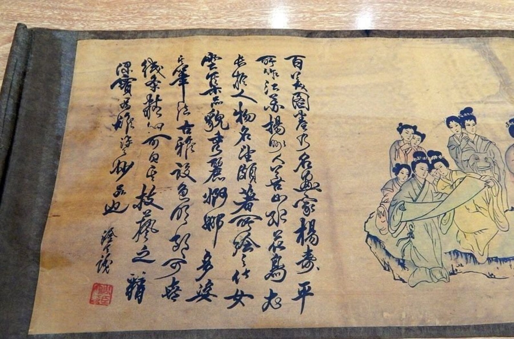
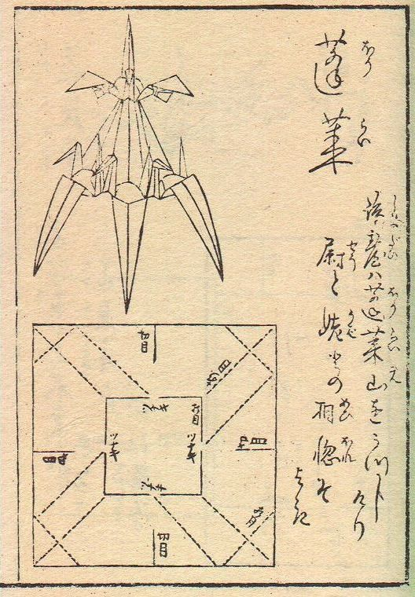

As paper suffers serious degredation over time, construction of an exact timeline of origami is impossible. Paper was invented in China around 105 A.D., and traditional paper folding is an important part of Chinese and Korean history. However, the Japanese were the first culture to popularise paper folding as an art form.
Before 1880, Origami was referred to as orikata, or "folded shapes". The word comes from the Japanese oru (to fold) and kami (paper)
Although origami is an extremely accessible passtime today, it was not so originally. At first, origami was reserved for the elite of Japanese society. Monks folded origami as a part of religious worship, and origami was also used during ceremonies, such weddings.
The first book about origami was published in 1797. Written by Akisato Rito, the Sembazuru Orikata. The book discusses origami's affect on culture, and not step by step instructions.
There is a traditional story in Japan that claims if someone folds 1,000 origami cranes, they will be granted a wish.